What is ASIDE?
ASIDE is A Salesforce IDE that is fast, free, and always available. It is full-featured and supports the entire Salesforce development cycle from writing code, running unit tests, querying/managing data, and deploying the resulting application.
How can I use this Help?
This help section serves as the documentation for all of ASIDE. It is most easily consumed with the search feature. Click search in the top right or use the esc key to toggle the search open and closed. When the search is open, click any entry in the search to jump to the related text. If you find there are too many entries in the search, enter a topic into the search input to filter the results.
If you are seeking other information about ASIDE, please see the other available pages: about, updates, or shortcuts.
If you are seeking other information about ASIDE, please see the other available pages: about, updates, or shortcuts.
Getting Started
Getting started with ASIDE is simple. All you need is a Salesforce login and an Internet connection, and considering you’re viewing this web page, you probably have the latter half covered!
Logging In
To login, navigate to the login page. From here there are two buttons for logging in: Sandbox Login and Production Login. If you are working against a production Salesforce organization, a developer organization, or any Salesforce organization where you normally login via login.salesforce.com, you’ll want to click the Production Login button. If you are working against a sandbox organization, or normally login via test.salesforce.com, you’ll want to use the Sandbox Login button to login. Once you click one of the buttons, Salesforce handles your login (go ahead, look at the URL) and then returns you back to ASIDE after a successful login. ASIDE doesn’t ever see your credentials or store any of your Salesforce data.
Login Limitations
There are a few cases where ASIDE won’t allow you to login, or work as described in the rest of this help document. They are:
- If your organization has IP restrictions enabled it will not be possible to login or use ASIDE because it has a dynamic IP address. There is no range of IPs I can give you to whitelist either ☹.
- If your organization has the setting Lock sessions to the IP address from which they originated enabled, then you’re likely to encounter issues with ASIDE because it has a dynamic IP address from request-to-request.
- If your user profile does not have both the Modify All Data and Author Apex permissions, then ASIDE is limited to the data screen, and does not provide access to the code, test, or push screens.
Where to Start
ASIDE has four main screens that correspond to the four primary activities that occur during Salesforce development: code, test, push, and data. Use the four buttons in the top right to switch between the screens. The table below lays out the functionality available to each screen.
| Screen | Functionality |
|---|---|
| Code | Ability to create, edit, and delete code |
| Test | Run Unit Tests & View Coverage |
| Push | Retrieve and Deploy Metadata |
| Data | Query and Modify Data |
How To: Common Salesforce Operations
ASIDE supports the entire workflow of Salesforce developer tasks. Below are examples of how to perform common tasks with ASIDE.
Creating New Files
From the code screen:
- Click the command typeahead in top left corner
- Choose New Apex Class
- Replace CLASS_NAME with a cool class name of your own
- Save the new apex class by clicking save in the lower left, or with command + s
Opening Existing Files
From the code screen:
- Click the command typeahead in top left corner
- Type in the name of the file you want to open
- Press enter
Running Unit Tests
From the test screen:
- Click the run some button
- In the second input, enter the name(s) of any test classes you wish to execute
- Click run by selection
Viewing Code Coverage
From the test screen, after unit tests have ran:
- Click the code coverage button
- Enjoy code coverage results
Retrieving Metadata
From the push screen:
- Click Select Retrieve Filter
- Choose the default filter named Apex, Lightning, VF, Static Resources
- Click Add All
- Click retrieve
Deploying Metadata
Logged into the target org, from the push screen:
- Drag your previous retrieve result from your desktop onto ASIDE’s browser window
- Wait for the deploy to complete
Querying Data
From the data screen:
- Click into the enter a soql query… input
- Type SELECT Id, Name FROM Account
- Click the query button or press command + s
Main Menu Operations
In the top right corner of the screen is your username. Hover over it, and a menu appears. This menu is referred to as the main menu and has all of the operations that are always available to you, regardless of what screen you’re on. Each item in this menu is explained below.
New Tab
Clicking new tab opens a new instance of ASIDE. Alternatively you can use the shortcut command + shift + i.
There is no way to open multiple tabs within a single instance of ASIDE. However, ASIDE does have a virtual tabs feature, which makes having multiple instances open behave similarly to having one instance with multiple tabs. ASIDE detects when you have multiple instances of itself open inside your browser, and renders each instance as a “virtual tab”. Clicking one of the virtual tabs tells your browser to switch tabs to the corresponding instance of ASIDE.
There is no way to open multiple tabs within a single instance of ASIDE. However, ASIDE does have a virtual tabs feature, which makes having multiple instances open behave similarly to having one instance with multiple tabs. ASIDE detects when you have multiple instances of itself open inside your browser, and renders each instance as a “virtual tab”. Clicking one of the virtual tabs tells your browser to switch tabs to the corresponding instance of ASIDE.
Help
Opens the help page in a new window. Shortcut: command + shift + 0
Options
Opens the options popup. Please note that you do not see all the options at once, they are relative to the screen you are viewing. For example, if you are viewing the code screen and choose options, you get options related to the code screen only. As you make changes to the options, your choices are automatically saved in your browser’s storage. Shortcut: command + shift + p.
Shortcuts
Opens the shortcuts page in a new window. Shortcuts shown in the globals section can be used at anytime, but shortcuts listed for a specific screen (code, data) only work on those screens. Shortcut: command + shift + h
Debug Logs
Choosing debug logs displays debug log information in the side panel (shortcut: command + shift + l). At the top of the panel is a list of debug logs available for viewing. Beneath the list of debug logs are buttons for managing how ASIDE works with debug logs. The functionality of each button is described below:
By default, clicking one of the debug logs will download the debug log. However, you can change how ASIDE serves up the debug log by changing the input at the bottom from Download Log to either Open in Primary Editor (debug logs will open in the main editor) or Open in Diff Editor (debug logs will open in the secondary “diff” editor). Note that if you open a debug log in the primary editor, you will likely end up opening the debug log over the code you were last working on. If this occurs and you wish to leave the debug log and return to the code you were editing, click the close debug log button.
ASIDE does make an attempt to keep the trace flag up to date so you don’t have to. When ASIDE opens and when you execute anonymous the trace flag is automatically updated to help keep your debug logs up to date.
| Button | Functionality |
|---|---|
| Start Logging | Updates your user’s TraceFlag entry |
| Refresh Logs | Updates the list of debug logs with the newest |
| Set Log Levels | Open the options popup to the debug log level section |
By default, clicking one of the debug logs will download the debug log. However, you can change how ASIDE serves up the debug log by changing the input at the bottom from Download Log to either Open in Primary Editor (debug logs will open in the main editor) or Open in Diff Editor (debug logs will open in the secondary “diff” editor). Note that if you open a debug log in the primary editor, you will likely end up opening the debug log over the code you were last working on. If this occurs and you wish to leave the debug log and return to the code you were editing, click the close debug log button.
ASIDE does make an attempt to keep the trace flag up to date so you don’t have to. When ASIDE opens and when you execute anonymous the trace flag is automatically updated to help keep your debug logs up to date.
Development Mode
Toggles the value of the development mode on your user record. Shortcut: command + shift + v.
Open in Salesforce
Opens the current context of ASIDE within Salesforce. Shortcut: command + shift + o.
-
On the code screen:
- If editing Visualforce, opens the VF page
- Otherwise opens the detail page for the file being edited
- On the test screen: opens the Salesforce standard test execution page
- On the push screen: opens the monitor deployments page
- On the data screen: opens the show all tabs page
User Detail
Opens the user detail page in a new tab. Shortcut: command + shift + u.
Logout
Logs you out of both ASIDE and Salesforce. Shortcut: command + shift + x.
Command Typeahead
The command typeahead is how you tell ASIDE what you want to do while editing code. It sits in the top left hand corner of the code screen. There are a handful basic command types you can issue to ASIDE that are listed below.
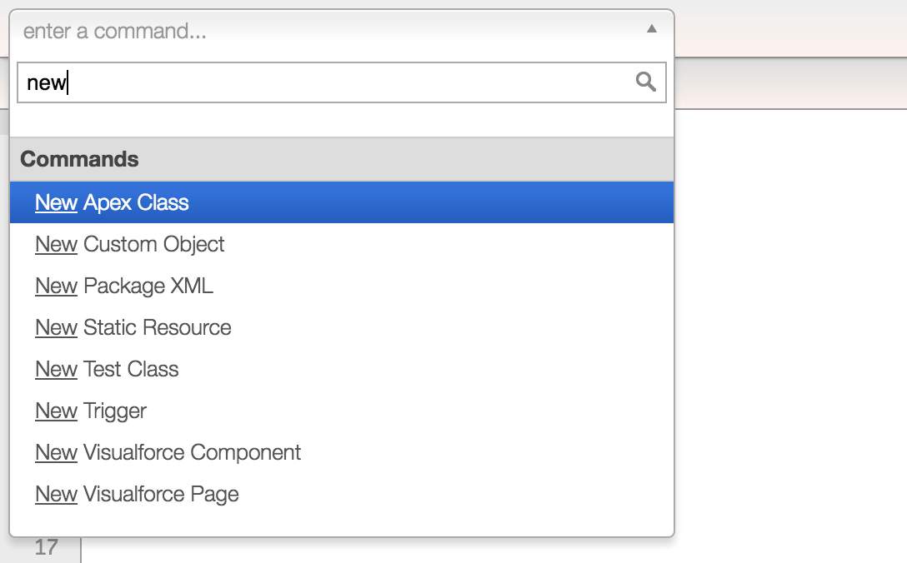
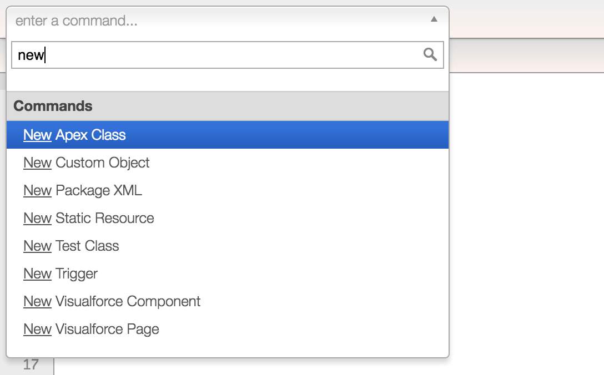
New
Type new into the command typeahead to see the types of files ASIDE can create. new apex class, new custom object, new package xml, new static resource, new test class, new trigger, new visualforce component, new visualforce page, new lightning application, new lightning controller, new lightning component, new lightning design, new lightning documentation, new lightning event, new lightning helper, new lightning interface, new lightning renderer, new lightning style, new lightning svg, new lightning tokens, and new ui theme are all valid commands.
New UI Theme
The New UI Theme command allows you to alter the entire look and feel of ASIDE. When you choose to create a New UI Theme, ASIDEs primary stylesheet is cloned into your browsers local storage where you are able to freely edit it from the code editor without modifying ASIDEs original stylesheet. If you then choose your custom stylesheet from the options screen, ASIDE will switch to use that stylesheet. Please note that if you modify your stylesheet with broken css and set it as your UI theme, it is possible to style ASIDE such that it will not be usable. If this occurs, use command + shift + \ (Mac) or control + shift + \ (PC) to reset to the default stylesheet.
By default there are two different stylesheets available from the Global Style section of the options dialog: Classic and Dark. When you create new custom UI themes they will be listed there as well. If you create a new stylesheet that you think others would like to use, send it to me at admin@aside.io.
By default there are two different stylesheets available from the Global Style section of the options dialog: Classic and Dark. When you create new custom UI themes they will be listed there as well. If you create a new stylesheet that you think others would like to use, send it to me at admin@aside.io.
Open
Shows the entire list of files you are able to open. Type more of the filename you wish to open to filter the list further.
Execute Anonymous
Puts the editor in execute anonymous mode. The save button and the normal save shortcut (command + s) are used to execute the anonymous Apex code you have written in the editor. Your last executed block is remembered and automatically loaded into the editor when you choose the execute anonymous command. Hint: Use history functionality to look through previously executed blocks.
Go To
Typing go to into the command typeahead will result in four options: Go To Apex Developers Guide , Go To Developer Forums, Go To Salesforce Stack Exchange, and Go To Visualforce Developers Guide. Clicking one of them will open the related website.
Writing Code
ASIDE supports writing a variety of different code types: Apex Classes, Apex Triggers, Visualforce Pages, Visualforce Components, Static Resources, Custom Objects and even Package.xml files.
Apex Classes
To create a new Apex Class, navigate to the code screen, click into the command typeahead, and type New Apex Class.
To work with an existing Apex Class, type its name into the command typeahead. If you aren’t sure of the name of the file you want to work with, type .cls into the command typeahead, as this is the extension for Apex Classes, so it will filter the list of files accordingly.
To work with an existing Apex Class, type its name into the command typeahead. If you aren’t sure of the name of the file you want to work with, type .cls into the command typeahead, as this is the extension for Apex Classes, so it will filter the list of files accordingly.
Apex Test Classes
To create a new Apex Test Class, navigate to the code screen, click into the command typeahead, and type New Test Class.
To work with an existing Apex Test Class, type its name into the command typeahead. If you don’t remember the name of the test class you are looking to open, unfortunately there is no way to generate a list of test classes with ASIDE. However, ASIDE works best when you name your files according to best practice. If you have been adding the word Test in the names of all your test classes, it should be as simple as typing Test into the command typeahead to filter to just test classes.
Once you have written your unit tests, test classes can have their unit tests executed from the code editor with the shortcut: command + g.
To work with an existing Apex Test Class, type its name into the command typeahead. If you don’t remember the name of the test class you are looking to open, unfortunately there is no way to generate a list of test classes with ASIDE. However, ASIDE works best when you name your files according to best practice. If you have been adding the word Test in the names of all your test classes, it should be as simple as typing Test into the command typeahead to filter to just test classes.
Once you have written your unit tests, test classes can have their unit tests executed from the code editor with the shortcut: command + g.
Apex Triggers
To create a new Apex Trigger, navigate to the code screen, click into the command typeahead, and type New Trigger.
To work with an existing Apex Trigger, type its name into the command typeahead. If you aren’t sure of the name of the trigger you want to work with, type .trigger into the command typeahead, as this is the extension for Apex Triggers, so it will filter the list of files accordingly.
To work with an existing Apex Trigger, type its name into the command typeahead. If you aren’t sure of the name of the trigger you want to work with, type .trigger into the command typeahead, as this is the extension for Apex Triggers, so it will filter the list of files accordingly.
Lightning Resources
To create a new Lightning Resource, navigate to the code screen, click into the command typeahead, and type New Lightning. From here all the new Lightning types you can create will be displayed, as shown in the screenshot below.

Any time you save a new Lightning Resource you will be prompted to enter the name of the corresponding Lightning Bundle (API Name AuraDefinitionBundle, see here). You can either enter a brand new name to create a new Lightning Bundle, or enter the name of an existing Lightning Bundle to add the new resource to that bundle.
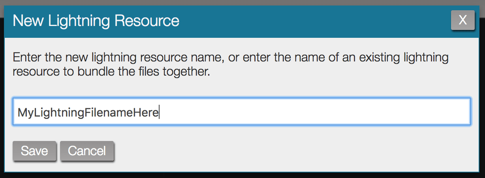
To work with existing Lightning code, type the resource name into the command typeahead. If you aren’t sure of the name of the Lightning Resource you want to work with, type .aura into the command typeahead, as this is the prefix for all Lightning Resource extensions, so it will filter the list accordingly.
Any time you save a new Lightning Resource you will be prompted to enter the name of the corresponding Lightning Bundle (API Name AuraDefinitionBundle, see here). You can either enter a brand new name to create a new Lightning Bundle, or enter the name of an existing Lightning Bundle to add the new resource to that bundle.
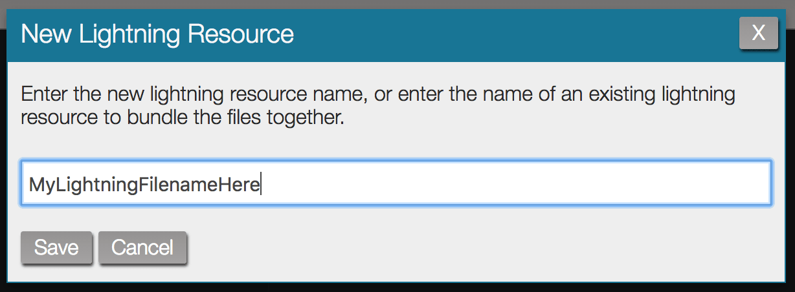
To work with existing Lightning code, type the resource name into the command typeahead. If you aren’t sure of the name of the Lightning Resource you want to work with, type .aura into the command typeahead, as this is the prefix for all Lightning Resource extensions, so it will filter the list accordingly.
Visualforce Pages
To create a new Visualforce Page, navigate to the code screen, click into the command typeahead, and type New Visualforce Page.
To work with an existing Visualforce Page, type its name into the command typeahead. If you aren’t sure of the name of the page you want to work with, type .page into the command typeahead, as this is the extension for Visualforce Pages, so it will filter the list of files accordingly.
ASIDE is capable of generating a controller or unit test automatically when saving a new Visualforce page. This allows you to speed up your development, and reference a controller that does not yet exist. Using the # character as the value for the controller or extensions attribute on a new Visualforce Page will result in the controller or extension along with its test class automatically being generated. Syntax examples below:
<apex:page controller=”#”> <apex:page standardController=”MyObject__c” extensions=”#Ext”>
Using the above syntax will automatically generate both an apex controller/extension and corresponding test class, then will replace the hash tag with the new apex controller/extension name. The name of the new Apex controller/extension will be the same as the Visualforce page name, and the test class will be the controller/extension name with "Test" appended to the end. However, you can specify a string to append to the end of the Apex controller/extension name by including the string after the hash tag. If the Visualforce page extension example above were saved with the filename MyPage, three files would be created in Salesforce on save: MyPage.page, MyPageExt.cls, MyPageExtTest.cls.
To work with an existing Visualforce Page, type its name into the command typeahead. If you aren’t sure of the name of the page you want to work with, type .page into the command typeahead, as this is the extension for Visualforce Pages, so it will filter the list of files accordingly.
ASIDE is capable of generating a controller or unit test automatically when saving a new Visualforce page. This allows you to speed up your development, and reference a controller that does not yet exist. Using the # character as the value for the controller or extensions attribute on a new Visualforce Page will result in the controller or extension along with its test class automatically being generated. Syntax examples below:
<apex:page controller=”#”> <apex:page standardController=”MyObject__c” extensions=”#Ext”>
Using the above syntax will automatically generate both an apex controller/extension and corresponding test class, then will replace the hash tag with the new apex controller/extension name. The name of the new Apex controller/extension will be the same as the Visualforce page name, and the test class will be the controller/extension name with "Test" appended to the end. However, you can specify a string to append to the end of the Apex controller/extension name by including the string after the hash tag. If the Visualforce page extension example above were saved with the filename MyPage, three files would be created in Salesforce on save: MyPage.page, MyPageExt.cls, MyPageExtTest.cls.
Visualforce Components
To create a new Visualforce Component, navigate to the code screen, click into the command typeahead, and type New Visualforce Component .
To work with an existing Visualforce Component, type its name into the command typeahead. If you aren’t sure of the name of the component you want to work with, type .component into the command typeahead, as this is the extension for Visualforce Components, so it will filter the list of files accordingly.
ASIDE is capable of generating a controller or unit test automatically when saving a new Visualforce Component. This allows you to speed up your development, and reference a controller that does not yet exist. Using the # character as the value for the "controller" or "extensions" attribute on a new Visualforce Component will result in the controller or extension along with its test class automatically being generated. Syntax examples below:
<apex:component controller=”#”> <apex:component standardController=”MyObject__c” extensions=”#Ext”>
Using the above syntax will automatically generate both an apex controller/extension and corresponding test class, then will replace the hash tag with the new apex controller/extension name. The name of the new Apex controller/extension will be the same as the Visualforce Component name, and the test class will be the controller/extension name with "Test" appended to the end. However, you can specify a string to append to the end of the Apex controller/extension name by including the string after the hash tag. If the Visualforce Component extension example above were saved with the filename MyComponent, three files would be created in Salesforce on save: MyComponent.component, MyComponentExt.cls, MyComponentExtTest.cls.
To work with an existing Visualforce Component, type its name into the command typeahead. If you aren’t sure of the name of the component you want to work with, type .component into the command typeahead, as this is the extension for Visualforce Components, so it will filter the list of files accordingly.
ASIDE is capable of generating a controller or unit test automatically when saving a new Visualforce Component. This allows you to speed up your development, and reference a controller that does not yet exist. Using the # character as the value for the "controller" or "extensions" attribute on a new Visualforce Component will result in the controller or extension along with its test class automatically being generated. Syntax examples below:
<apex:component controller=”#”> <apex:component standardController=”MyObject__c” extensions=”#Ext”>
Using the above syntax will automatically generate both an apex controller/extension and corresponding test class, then will replace the hash tag with the new apex controller/extension name. The name of the new Apex controller/extension will be the same as the Visualforce Component name, and the test class will be the controller/extension name with "Test" appended to the end. However, you can specify a string to append to the end of the Apex controller/extension name by including the string after the hash tag. If the Visualforce Component extension example above were saved with the filename MyComponent, three files would be created in Salesforce on save: MyComponent.component, MyComponentExt.cls, MyComponentExtTest.cls.
Static Resources
To create a new Static Resource, navigate to the code screen, click into the command typeahead, and type New Static Resource. It is possible to create new css, js, html, xml, zip, and "upload" based Static Resources; when creating a Static Resource you will be prompted to choose one of those types.
To work with an existing Static Resource, type its name into the command typeahead. If you aren’t sure of the name of the resource you want to work with, type .resource into the command typeahead, as this is the extension for Static Resources, so it will filter the list of files accordingly.
To work with an existing Static Resource, type its name into the command typeahead. If you aren’t sure of the name of the resource you want to work with, type .resource into the command typeahead, as this is the extension for Static Resources, so it will filter the list of files accordingly.
Static Resource Types
Static Resources have a content type that describes the type of content stored in the resource. ASIDE supports the following resource types: CSS, HTML, Javascript, XML, and Zip. Working with the non-zip types is simple and is no different than working with other file types in ASIDE such as Apex Classes or Triggers.
Zipped Static Resources
To create a zipped Static Resource choose Zip as the resource type when creating the Static Resource. This adds a new button to the header, open resource, which is used to add, delete, and modify files inside of the zip. Opening an existing zipped static resource will also display the open resource button.
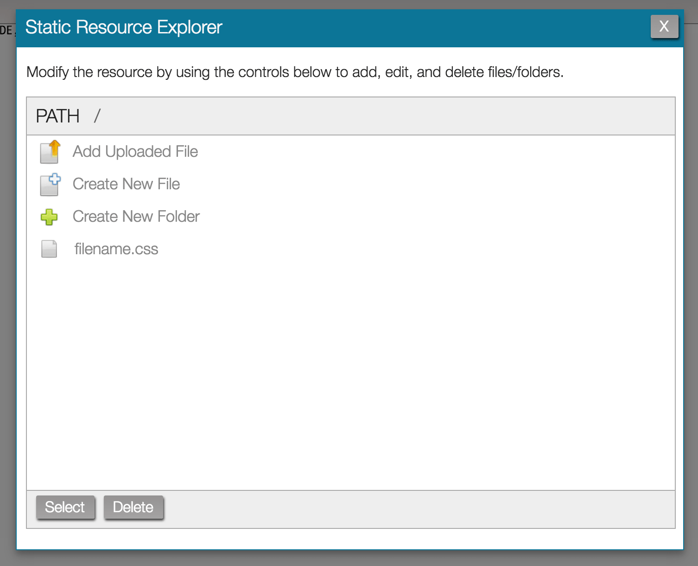
To open a file or folder displayed in the Static Resource Explorer double click on it. If instead of working with existing files you need to create new files there are three options in the resource explorer for adding new content to the zip:
Take extra precaution when working with zipped static resources. Saving will cause the entire static resource to be saved to the server, not just the file you are editing. Opening a different zipped file without first saving your changes will cause you to lose your changes in the current zipped file. Using the delete shortcut (command + k) will cause the entire static resource to be deleted from the server. To delete an individual file inside of a zipped resource use the delete button found inside of the static resource explorer popup.
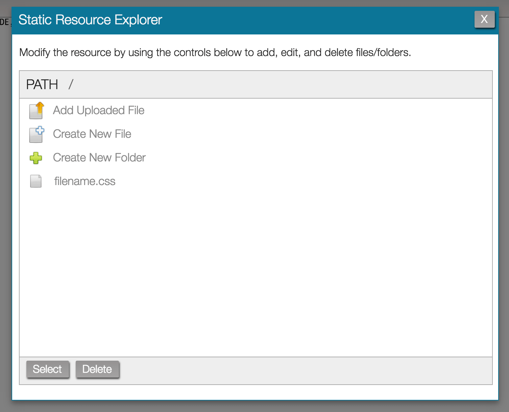
To open a file or folder displayed in the Static Resource Explorer double click on it. If instead of working with existing files you need to create new files there are three options in the resource explorer for adding new content to the zip:
| Button | Functionality |
|---|---|
| Add Uploaded File | Upload an existing file into the resource |
| Create New File | Creates a new blank file to the resource |
| Create New Folder | Adds a new folder to the zip |
Take extra precaution when working with zipped static resources. Saving will cause the entire static resource to be saved to the server, not just the file you are editing. Opening a different zipped file without first saving your changes will cause you to lose your changes in the current zipped file. Using the delete shortcut (command + k) will cause the entire static resource to be deleted from the server. To delete an individual file inside of a zipped resource use the delete button found inside of the static resource explorer popup.
Static Resource Uploads
Most likely you have an asset you want to upload and reference as a static resource. To do this, choose Upload a File as the type when creating a new static resource. From here ASIDE will upload the file and infer its content type from the file you picked. ASIDE will infer its edit-ability from the content type of the uploaded file.
Custom Objects
To create a new Custom Object, navigate to the code screen, click into the command typeahead, and type New Custom Object. The fullName field within the sObject metadata determines the name of the custom object.
To work with an existing Custom Object, type its name into the command typeahead. If you aren’t sure of the name of the sObject you want to work with, type .object into the command typeahead, as this is the extension for Custom Objects, so it will filter the list of files accordingly.
Please note that standard objects do not appear within ASIDE for editing.
To work with an existing Custom Object, type its name into the command typeahead. If you aren’t sure of the name of the sObject you want to work with, type .object into the command typeahead, as this is the extension for Custom Objects, so it will filter the list of files accordingly.
Please note that standard objects do not appear within ASIDE for editing.
Package XML Files
To make retrieves simpler, ASIDE allows you to save and edit package XML files within the code editor. To create a new package XML file, choose New Package XML from the command typeahead. Working with a package XML file is no different than working with other file types in ASIDE. However, package XML files are not saved to Salesforce, they are stored in your browsers local storage. Additionally, there is no validation of the package XML file on save (tip: you can save anything you want in these files).
Once you have a package XML saved, there are two ways you can use it. If you are viewing a package xml in the code editor, use the shortcut command + g to perform a retrieve of the contents of that package XML. Alternatively, the package XML files can be referenced from the push section. If you are creating or editing a retrieve filter, you can add one of the package XML files to the filter. This allows you to retrieve the contents of the package XML in addition to the results of the retrieve filter queries. More information on this is available in the retrieve filters section.
Once you have a package XML saved, there are two ways you can use it. If you are viewing a package xml in the code editor, use the shortcut command + g to perform a retrieve of the contents of that package XML. Alternatively, the package XML files can be referenced from the push section. If you are creating or editing a retrieve filter, you can add one of the package XML files to the filter. This allows you to retrieve the contents of the package XML in addition to the results of the retrieve filter queries. More information on this is available in the retrieve filters section.
Configuring the Code Editor
Opening the options dialog (shortcut: command + shift + p) while on the code screen will reveal a wide variety of options for configuring ASIDE to best suit your needs. Many of the options are self-explanatory, the ones that aren’t are discussed in greater detail below.
Conflict Resolution
During development it is possible to encounter "save conflict" errors where another user has updated the same bit of code you are trying to save. ASIDE provides a number of options for handling these save conflicts; they are listed below.
do not attempt to resolve conflicts
This is the most basic method. Informs the user there was an error and rejects the save.
show diff of conflict and merge it yourself
Present a diff of your working file (left) and the version on the server (right). Merge and save manually.
let aside resolve the conflict automatically, when the conflict cannot be automatically resolved, use the manual resolution method
ASIDE attempts to merge your changes into the server version and save again. If the merge fails, works like the show diff of conflict and merge it yourself option. Please note this functionality is experimental, and using it may result in loss of code.
let aside resolve the conflict automatically, when the conflict cannot be automatically resolved, use the no resolution method
ASIDE attempts to merge your changes into the server version and save again. If the merge fails, works like the do not attempt to resolve conflicts option. Please note this functionality is experimental, and using it may result in loss of code.
do not attempt to resolve conflicts
This is the most basic method. Informs the user there was an error and rejects the save.
show diff of conflict and merge it yourself
Present a diff of your working file (left) and the version on the server (right). Merge and save manually.
let aside resolve the conflict automatically, when the conflict cannot be automatically resolved, use the manual resolution method
ASIDE attempts to merge your changes into the server version and save again. If the merge fails, works like the show diff of conflict and merge it yourself option. Please note this functionality is experimental, and using it may result in loss of code.
let aside resolve the conflict automatically, when the conflict cannot be automatically resolved, use the no resolution method
ASIDE attempts to merge your changes into the server version and save again. If the merge fails, works like the do not attempt to resolve conflicts option. Please note this functionality is experimental, and using it may result in loss of code.
Org Code Search
The old implementation of the Find All feature (previously known as org code search) installed multiple classes and objects into your org to archive the code in a searchable format. This feature no longer requires an install, and as such there is the option to uninstall it if you have the old code and metadata installed in your org.
Sync
ASIDE is aware of other instances of ASIDE you have running, and is able to work together with them to provide a more cohesive experience, provided you are not using Internet Explorer. You can configure to what degree ASIDE will communicate with itself from the sync set of options.
Other - Filtering the Command Typeahead
By default the command typeahead shows all the Apex Classes, Pages, Triggers, Components, Lightning Resources, Static Resources, and Custom Objects in your Salesforce organization. However, you can filter what files appear in the typeahead. From the options section scroll to Other - configure various options. The option whose description mentions, "filters the command typeahead", has four values by default Load Everything, Load Only Unpackaged, Load Only Packaged, and Don't Load Anything. These filters reduce the scope of what appears in the type ahead and increase the speed ASIDE loads. Typically there is no benefit in loading code files from managed packages, so Load Only Unpackaged is good for that use case. Don't Load Anything is good for administrators who don't intend on writing any code, it makes ASIDE load noticeably faster.
Additionally, you can use retrieve filters created in the push section to filter the command typeahead. Only the ApexClass, ApexPage, ApexComponent, ApexTrigger, AuraDefinition, StaticResource, and CustomObject queries are supported when using a retrieve filter to filter the typeahead. The Base Package XML and queries against objects other than those mentioned above are not considered when ASIDE is building out the list of files available to the selector.
Additionally, you can use retrieve filters created in the push section to filter the command typeahead. Only the ApexClass, ApexPage, ApexComponent, ApexTrigger, AuraDefinition, StaticResource, and CustomObject queries are supported when using a retrieve filter to filter the typeahead. The Base Package XML and queries against objects other than those mentioned above are not considered when ASIDE is building out the list of files available to the selector.
Code Screen Functionality
The code screen has a variety of functionality, most of which is accessible via the code footer at the bottom of the screen. On the right side of the footer is your cursor position (e.g. line 1, column 0), and on the left are a number of buttons. Depending on what type of file you have open in the code editor, you will get a different set of buttons in the footer. The functionality of each button, as well as a few operations that do not have buttons, is described below.
Save
Saves the current file. If you are in execute anonymous mode, then the anonymous block is executed. Shortcut: command + s.
Diff
Normally the diff editor will be opened for you through other functionality such as a save conflict or viewing a debug log. However, if you wish to toggle it yourself clicking the diff button will open and close the diff editor, or use the shortcut: command + shift + c. If you want to use the diff editor as a second editor, but not have it perform a diff, it is possible to toggle the difference highlighting on and off with the shortcut, command + shift + a.

Download
Downloads the contents of the code editor. If you are viewing a zipped static resource, the resource itself and not the single file you are viewing will be downloaded. Shortcut: command + shift + d.
Find
Typical find and replace functionality, searches for the text in the find box within the contents of the code editor. Click next or press enter to search for the token entered in the find input. New lines can be entered into the inputs with control + enter. The find panel can also be opened with the shortcut, command + f. If you have the diff editor open, the search is executed against the editor that has focus. There are also a number of options available for changing how the search functions, they are listed below.
| Option | Description |
|---|---|
| Case Sensitive | Matches must have the same case as the search token |
| Regular Expression | Interpret the search token as a JavaScript format regular expression |
| Whole Word | The search token must match the entire word and not just part of it |
| Wrap Around | When search reaches the end of the document, wraps back to the top to continue searching |
Find All
Searches all Apex and Visualforce code for the token in the search input. Results are initially displayed collapsed, click the + button in each row to expand that classes results and see where the tokens are actually used within the file. Clicking a row will cause the result to open in the code editor. To have the result open in a new instance of ASIDE, change Open in Current Instance to Open in New Instance. Shortcut: command + h.
History
Opens the local file history for the current file (shortcut: command + l). Local file history is stored as you save code to the server and open new files. Clicking a file history row in the panel will open the archived file in the primary editor, the diff editor, or cause the file to be downloaded, depending on the preferences you have set on the local history panel.
Entries in the local history table are either marked as Save Backup or Crash Backup. A Save Backup is a backup that occurred while ASIDE was functioning normally. If ASIDE happens to crash for any reason while you are working on a file, you will probably be notified when reopening the file. If you choose to not reopen the crashed version at that time, you can retrieve it from the history panel by choosing the Crash Backup entry.
Entries in the local history table are either marked as Save Backup or Crash Backup. A Save Backup is a backup that occurred while ASIDE was functioning normally. If ASIDE happens to crash for any reason while you are working on a file, you will probably be notified when reopening the file. If you choose to not reopen the crashed version at that time, you can retrieve it from the history panel by choosing the Crash Backup entry.
Lightning
Unlike Apex or Visualforce code, Lightning comes grouped together in a bundle. The Lightning button simplifies managing the Lightning Bundle. Click the Lightning button to add files to the bundle, or jump to existing files in the bundle. Please note that the resource types Event, Interface, and Tokens are not bundled. Shortcut: command + shift + y

Reload
Repeats the last action in the command typeahead. Shortcut: command + r.
Version
The code footer doesn’t actually have a button labeled as version, instead it displays the current file’s API version as the label of the button. For example, if MyClass.cls has an API version of 35.0, the version button in the code footer will be labeled as 35.0. Clicking this button will cause the Change Version dialog to open. If you want to change the API version, choose the new API version and click update. Shortcut: command + u.
Rename
Allows you to rename Visualforce and Static Resources. Apex is renamed by changing the class or trigger name in the code itself. Also works with Lightning, but only changes the MasterLabel field and not the AuraDefinitionBundle.DeveloperName (which is the field used for display in ASIDE). Shortcut: command + e.
Minify
Minifies the contents of the code editor, works on VF, HTML, Lightning, CSS, and JavaScript. Shortcut: command + shift + m.
Beautify
Beautifies the contents of the code editor, works on VF, HTML, Lightning, CSS, and JavaScript. Shortcut: command + shift + b.
Run Tests
Executes unit tests in the current file. Results can be viewed on the test screen. Shortcut: command + g.
Show Coverage
Toggles code coverage highlights on and off, and queries the server for the most up to date code coverage percentage. The code coverage percentage for the current file is displayed in the bar graph in the code footer, and the uncovered lines are highlighted in the code editor gutter (the left side of the editor that shows the line numbers). Displays as hide coverage when you already are displaying code coverage highlights.
Resource Type
Allows you to change the resource type of static resources. See the Static Resource Types section for more information about the various resource types. Shortcut: command + u.
Deleting Code
For safety reasons, the delete operation does not have a button anywhere in the interface; it can only be activated via shortcut. Using the shortcut command + k will prompt you to delete the file currently being viewed in the code editor. Please note that you cannot delete sObjects from within ASIDE.
Auto Completion
By default, the enable live autocomplete option is enabled which causes ASIDE to provide text suggestions as you type. To open the autocomplete menu manually, use the shortcut ctrl + space while you have focus in the code editor.
Tab Restore
ASIDE is aware of other instances you have open, and using the Tab State Restore feature you can save the state of your tabs and later reload them. This is useful for when you are working with a large number of files, want to close all your tabs at the end of the day, but want to be able to easy reopen all the tabs later. In this case, you would use the shortcut command + shift + , to save the tab state, and then use command + shift + . to reload that same tab state. Anytime ASIDE crashes the tab state is automatically saved for easy recovery. Please note that ASIDE does not make any attempt to restore the tab state of new, unsaved files.
Key Bindings
The code editor within ASIDE is an implementation of the excellent Ace Editor. By default, Ace comes with a number of default key bindings, you can view them here. In addition to the default key bindings, it is possible to switch to the key bindings used by Vim and Emacs. To change key bindings, navigate to the options menu from the code screen.
Running Unit Tests
There are multiple ways to execute unit tests from ASIDE. They are described in greater detail below.
Executing Tests from the Code Screen
To execute unit tests from the code screen, you must be viewing the Apex test class containing the unit tests that you want to run. Once you have the file open, click the run tests button in the footer, or use the command + g shortcut.
Executing Tests from the Test Screen
From the test screen there are multiple ways to run unit tests. In the top left hand corner of the screen you’ll see two buttons: run all and run some. run all does what you would expect – it runs all the unit tests in your entire organization. Most of the time however, you’ll want to use the run some button, to target a specific subset of tests.

There are two ways to run unit tests from the run some popup.
The first way is to run by query, which works by providing a query against the ApexClass sObject to target exactly which classes you’re looking to run. This may seem like a strange way to run unit tests, but if you have prefixed your class names with a namespace then it becomes a very powerful operation. For example, if all the test classes I have been writing begin with ASIDE_, then I can complete the query with the where clause Name like ‘ASIDE_%’ and execute all the tests for my application in a single click.
The second way to run unit tests from the run some popup is by using the run by selection functionality. This is similar to what you have seen in other Salesforce IDEs, where you are specifically selecting which classes’ unit tests you want to run. Either way, once you click run by query or run by selection, the tests will be queued for execution and results will begin appearing on the test screen.
There are two ways to run unit tests from the run some popup.
The first way is to run by query, which works by providing a query against the ApexClass sObject to target exactly which classes you’re looking to run. This may seem like a strange way to run unit tests, but if you have prefixed your class names with a namespace then it becomes a very powerful operation. For example, if all the test classes I have been writing begin with ASIDE_, then I can complete the query with the where clause Name like ‘ASIDE_%’ and execute all the tests for my application in a single click.
The second way to run unit tests from the run some popup is by using the run by selection functionality. This is similar to what you have seen in other Salesforce IDEs, where you are specifically selecting which classes’ unit tests you want to run. Either way, once you click run by query or run by selection, the tests will be queued for execution and results will begin appearing on the test screen.
Understanding Test Results
Once you have executed unit tests the results will begin appearing on the test screen. On the left half of the test screen is a list of results class-by-class. Clicking any of these results displays more detailed information about the results of that class on the right half of the screen.
Result Table
The result table on the left half of the test screen displays test results at a class level. Results displayed refresh automatically and include the name of the class, a timestamp of when the unit test was executed, the number of test methods in the class that passed, the number of test methods in the class that failed, and a status representing the overall success of the test class. A table of possible statuses and their meaning is displayed below.
While tests are running the first row in the results table will be a row representing the overall status of the unit test execution. It displays the number of tests that are in a queued, pending, or processing state. Clicking this status row will individually list out the classes that are currently pending execution. Clicking the x for their entry will cause that test classes execution to be aborted.
| Status | Description |
|---|---|
| Successful | The test class ran and all of the test methods executed successfully |
| Failed | The test class ran but at least 1 of its test methods failed |
| Error | The test class failed to run |
| Aborted | The test class was cancelled by the user before it finished processing |
While tests are running the first row in the results table will be a row representing the overall status of the unit test execution. It displays the number of tests that are in a queued, pending, or processing state. Clicking this status row will individually list out the classes that are currently pending execution. Clicking the x for their entry will cause that test classes execution to be aborted.
Changing the Result Table View
By default, the result table uses the following query to determine what results to display in the table:
SELECT FROM ApexTestQueueItem ORDER BY CreatedDate desc, Status asc
However, this may not always be suitable to your needs. Perhaps you are part of a large team and only want the results table to display test results relevant to your current work. To change the query that seeds the result table, click the set view button. From here you can change the query to whatever suits your needs. For more information on the ApexTestQueueItem sObject, see its entry in the Tooling API documentation.
SELECT
However, this may not always be suitable to your needs. Perhaps you are part of a large team and only want the results table to display test results relevant to your current work. To change the query that seeds the result table, click the set view button. From here you can change the query to whatever suits your needs. For more information on the ApexTestQueueItem sObject, see its entry in the Tooling API documentation.
Test Result Detail
Once a unit test has finished execution, its execution result is displayed in the results table. Clicking one of these results rows displays more detailed information about the test result on the right half of the screen.

At the top of the right half of the screen you will find a header recapping the same information found in the results table. Additionally, it also provides a couple buttons to quickly rerun the test (rerun), or view its source in the code editor (view class).
On the bottom half of the screen is an “accordion” component with a section for every test method in the class. Test methods that executed successfully and have no information displayed other than telling you it ran successfully. However, if the test method failed then it contains additional information such as the error message and stack trace information to help you address the issue. ASIDE parses any stack traces it displays to the user and attempts to make them interactive. Classes referenced by the stack trace are highlighted in blue and triggers are orange – both are clickable so you can jump directly to what the stack trace references instead of having to navigate there yourself.
At the top of the right half of the screen you will find a header recapping the same information found in the results table. Additionally, it also provides a couple buttons to quickly rerun the test (rerun), or view its source in the code editor (view class).
On the bottom half of the screen is an “accordion” component with a section for every test method in the class. Test methods that executed successfully and have no information displayed other than telling you it ran successfully. However, if the test method failed then it contains additional information such as the error message and stack trace information to help you address the issue. ASIDE parses any stack traces it displays to the user and attempts to make them interactive. Classes referenced by the stack trace are highlighted in blue and triggers are orange – both are clickable so you can jump directly to what the stack trace references instead of having to navigate there yourself.
Code Coverage
To calculate your organization’s code coverage, click the code coverage button found on the test screen. Please note that results will be most accurate if you run all tests prior to calculating your organization’s code coverage.
Understanding Code Coverage Results
Once coverage has completed calculating, the overall coverage for your organization is displayed in the top-right corner of the code coverage popup. Next to the coverage percentage is both the number of covered lines of code, and the total lines of code in your organization.
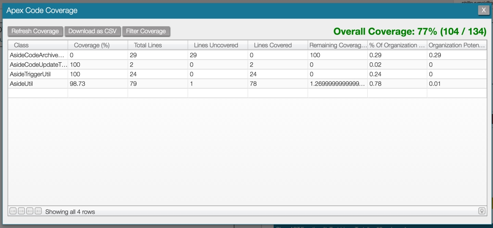
Beneath the overall coverage is a table that displays a variety of code coverage metrics, class-by-class. Each metric is described in greater detail below.
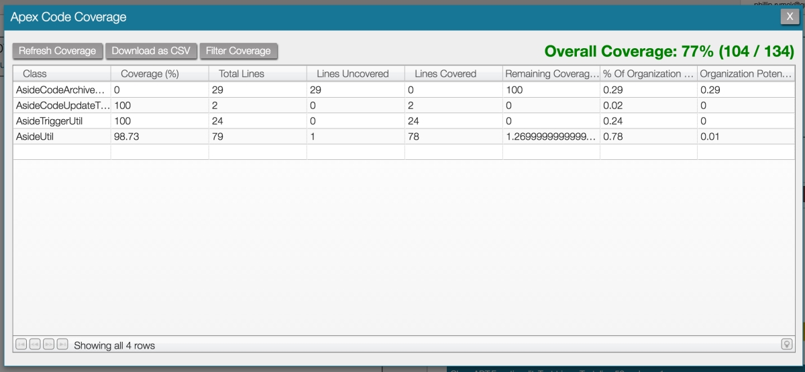
Beneath the overall coverage is a table that displays a variety of code coverage metrics, class-by-class. Each metric is described in greater detail below.
| Metric (Column) | Description |
|---|---|
| Class Name | Name of apex class results are being displayed for. |
| Lines Uncovered | Number of lines of code in the apex class which were not covered by unit tests. |
| Lines Covered | Number of lines of code in the apex class where were covered by unit tests. |
| Total Lines | Total number of coverable lines of code. Formula = 'Lines Uncovered' + 'Lines Covered'. |
| Coverage (%) | Percentage of lines of code in the apex class which were covered by unit tests. Formula = 'Lines Uncovered' / 'Total Lines'. |
| Remaining Coverage (%) | Percentage of lines of code in the apex class which were not covered by unit tests. Formula = 1 - ('Lines Uncovered' / 'Total Lines'). |
| % Of Organization Total | Size of the apex class, compared to the entire org, as a percentage. |
| Organization Potential Gain (%) | The amount of org code coverage that could be gained by raising the coverage for the apex class. This metric is useful when determining if it is worth your time to continue writing unit tests. |
Filtering Coverage
By default, the code coverage popup displays a report of your entire organization’s code coverage. If you wish to filter the report, click the Filter Coverage button. Next, you’ll need to modify the tail end of the SOQL query in the input. For example, if I wanted to display only code coverage for a project I have prefixed with ASIDE_ then I would complete the query as WHERE ApexClassOrTrigger.Name like 'ASIDE_%'. This is a query against the ApexCodeCoverageAggregate object, more info on which can be found here.
Exporting Code Coverage
If you wish to download a spreadsheet version of the code coverage report for your organization, click the Download as CSV button on the code coverage popup.
Performing Retrieves
ASIDE takes a powerful but unconventional approach to retrieves. Depending on if you already have a package.xml to seed the retrieve or not will determine how you proceed with the retrieve.
Retrieving with a Package XML
When you already have a package.xml specifying what you want to retrieve, ASIDE makes the operation simple. Navigate to the push screen, drag the package.xml from your computer, and drop it anywhere on the push screen. This will start the retrieve process and when it completes your browser will trigger a download of the retrieve result.
Retrieving without a Package XML
If you want to retrieve but don’t have a package.xml file ASIDE still has multiple ways of helping you create the package.xml file and perform the retrieve operation.
Building a Package XML using the Code Editor
To perform a retrieve similar to how you would with the ANT Migration Toolkit, change to the code screen and click into the command typeahead and choose New Package XML. From here you can manually build out a package.xml, and once it has been saved (command + s), you can use it to seed retrieves with the shortcut command + g.
Building a Package XML using Retrieve Filters
Retrieve filters are a powerful feature for determining what code and metadata should be pulled down for a retrieve. Navigate to the push screen and choose the Select Retrieve Filter drop down to see a list of retrieve filters available.
Using Retrieve Filters
To use a retrieve filter, first you’ll need to be on the push screen, and then click into the Select Retrieve Filter drop down. There are a number of predefined default filters that should cover most of your retrieval needs. For example, if I needed to retrieve everything I modified within the last week, I would choose the Code Modified By Me Within Last Week filter.
Choosing a retrieve filter will cause all the code and metadata that match that filter to appear in the table on the left hand side of the screen. This is a staging table – you still need to select what you actually want to retrieve or deploy by moving items from the left table to the right table. You can drag-and-drop single or multiple items from table to table, or use the buttons in the center of the screen, like Add All, to manipulate the tables. It is also possible to further filter the results in the left table by typing into the input above it. Once you have the list of items you wish to retrieve in the table on the right side of the screen, click retrieve to perform a retrieve of the items you’ve listed out, or click download package.xml to instead download a package.xml file of the items.
Choosing a retrieve filter will cause all the code and metadata that match that filter to appear in the table on the left hand side of the screen. This is a staging table – you still need to select what you actually want to retrieve or deploy by moving items from the left table to the right table. You can drag-and-drop single or multiple items from table to table, or use the buttons in the center of the screen, like Add All, to manipulate the tables. It is also possible to further filter the results in the left table by typing into the input above it. Once you have the list of items you wish to retrieve in the table on the right side of the screen, click retrieve to perform a retrieve of the items you’ve listed out, or click download package.xml to instead download a package.xml file of the items.
Custom Retrieve Filters
If the default retrieve filters do not cover your use case, it is possible to create custom retrieve filters. Navigate to the push screen, and then click Add Filter to begin creating a custom filter.

Once you’ve clicked Add Filter, the popup for managing filter creation and editing appears. The first step of creating the filter is to give the filter a name; this is the name that will appear in the list of retrieve filters. Once you've given the filter a name, click Add Metadata to begin adding content to the retrieve filter. There are two ways to specify what content you want to retrieve. Most salesforce retrieves are seeded by a package xml file, if you already have one you want to use saved in ASIDE, enter its name here. If you don't have a package xml file, enter the metadata type you want to retrieve. For example, if you wanted to retrieve Apex classes, enter ApexClass as the metadata type. Once you've chosen either a package.xml file or a metadata type, click Next.

After selecting a package.xml file you will be returned to the initial retrieve filter screen where you can add more metadata to the filter. If you've selected a metadata type instead of a package.xml file, the popup above appears. This screen allows you to specify how you want to retrieve metadata for the selected type. There are three ways to retrieve metadata.
After choosing the retrieval method which best suits your needs and click "next". The Wildcard option requires no additional information and you will be returned to the initial retrieve filter screen where you can add more metadata to the filter. If you choose the Written Out option, then the next popup will prompt you to enter the list of metadata members you would like to retrieve. Selecting the By Query option displays the following screen:

In order to retrieve by query there are two pieces of data you must specify. First, you must fill out a query which specifies the scope of what you want to retrieve. After that you must fill in the Member Field which tells ASIDE how to turn the query results into a package.xml file.
Using a query to retrieve might be unintuitive at first but it is a powerful feature. Leave the query wide open to select all metadata of a certain type, or add in a where clause to target something specific. In this way you can select all of a certain type even if the sObject does not support a wildcard based retrieve. The schema for the metadata sObjects that can be queried by ASIDE’s retrieve functionality is available here. The query retrieve filters also include a couple special global variables, which can be used within the where clause in your retrieve filters. They are explained below.
Inspect the default filters for ideas on how to build your own. For example, the Code Modified Since Last Retrieve filter pictured below would return any files that were modified since the last time a retrieve was performed within ASIDE. This makes determining what you need to retrieve simple, as ASIDE figures it out for you.
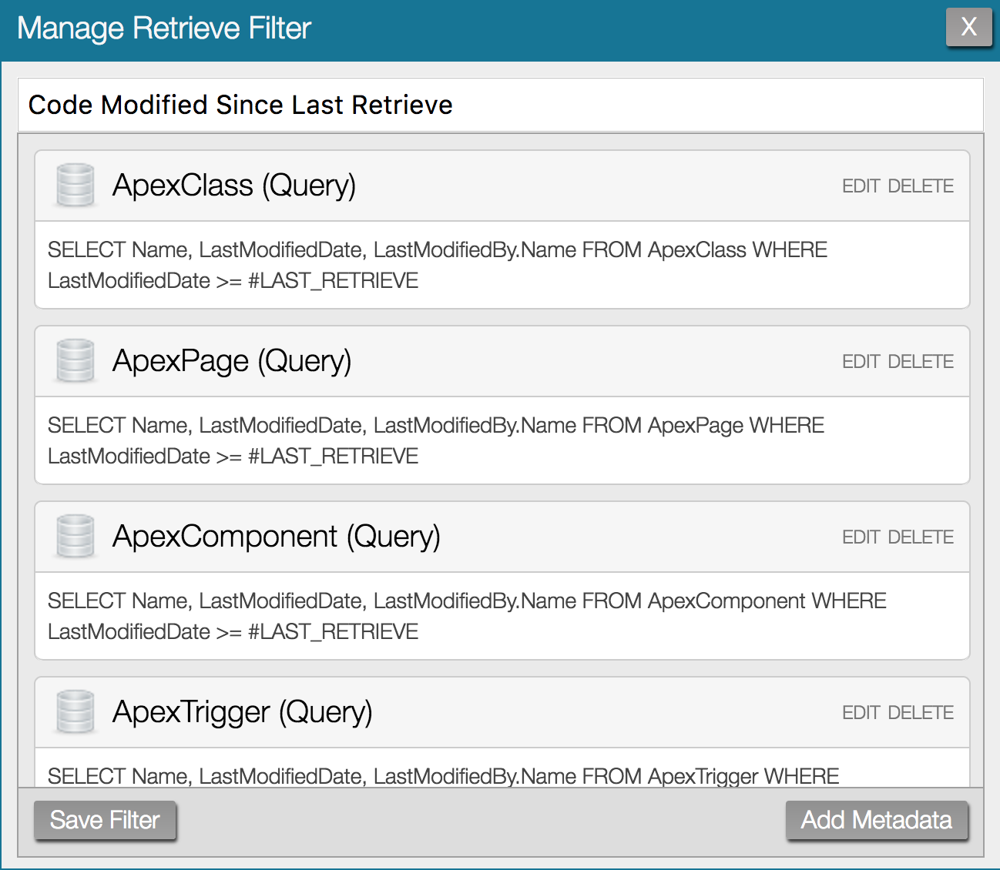
Once you have defined the query, you need fill out the Member field. This field tells ASIDE what sObject field(s) to use as the value in the <members> element when building out the package XML. Most of the time the appropriate value is either the Name or DeveloperName field, but some objects require more complex Member field values to successfully retrieve. For example, examine the default filter named "Objects and Layouts". Under the CustomObject (Query) entry, the Member field is defined as DeveloperName + "__c". This is because the value in the DeveloperName field in salesforce is not quite the correct value required for retrieves. They need an "__c" concatenated to the end of the DeveloperName value, so the Member field supports this type of basic concatenation between strings surrounded in double quotes as well as concatenation of sObject fields. In addition to concatenation, there is also one function available, TRANSLATE, which can be used to turn an object id into its API name. The Layout (Query) uses the TRANSLATE function to turn the TableOrEnumId field into an API name: TRANSLATE(TableEnumOrId) + "-" + Name
Once you have defined your retrieve filter, click Save Filter to add the filter to the list retrieve filters. After saving the filter it is not automatically applied, you will need to select it from the list. If at any time you want to change the definition of a filter, you can edit it by selecting the filter, and clicking the Edit Filter button.
Once you’ve clicked Add Filter, the popup for managing filter creation and editing appears. The first step of creating the filter is to give the filter a name; this is the name that will appear in the list of retrieve filters. Once you've given the filter a name, click Add Metadata to begin adding content to the retrieve filter. There are two ways to specify what content you want to retrieve. Most salesforce retrieves are seeded by a package xml file, if you already have one you want to use saved in ASIDE, enter its name here. If you don't have a package xml file, enter the metadata type you want to retrieve. For example, if you wanted to retrieve Apex classes, enter ApexClass as the metadata type. Once you've chosen either a package.xml file or a metadata type, click Next.
After selecting a package.xml file you will be returned to the initial retrieve filter screen where you can add more metadata to the filter. If you've selected a metadata type instead of a package.xml file, the popup above appears. This screen allows you to specify how you want to retrieve metadata for the selected type. There are three ways to retrieve metadata.
| Retrieve Method | Description |
|---|---|
| By Query | Use a query to dynamically specify what data should be retrieved. For example, retrieve test classes with the following query: SELECT Name FROM ApexClass WHERE Name like '%Test%' |
| Wildcard | Retrieves all of the specified metadata type. Equivalent of writing <members>*</members> into a package XML. Only works with metadata types that support wildcard retrieves. |
| Written Out | Write out a comma-separated list of metadata to retrieve. For example, if you had chosen metadata type of CustomObject, you might write out "Account,Contact,User" (without the quotes). |
After choosing the retrieval method which best suits your needs and click "next". The Wildcard option requires no additional information and you will be returned to the initial retrieve filter screen where you can add more metadata to the filter. If you choose the Written Out option, then the next popup will prompt you to enter the list of metadata members you would like to retrieve. Selecting the By Query option displays the following screen:
In order to retrieve by query there are two pieces of data you must specify. First, you must fill out a query which specifies the scope of what you want to retrieve. After that you must fill in the Member Field which tells ASIDE how to turn the query results into a package.xml file.
Using a query to retrieve might be unintuitive at first but it is a powerful feature. Leave the query wide open to select all metadata of a certain type, or add in a where clause to target something specific. In this way you can select all of a certain type even if the sObject does not support a wildcard based retrieve. The schema for the metadata sObjects that can be queried by ASIDE’s retrieve functionality is available here. The query retrieve filters also include a couple special global variables, which can be used within the where clause in your retrieve filters. They are explained below.
| Variable | Description |
|---|---|
| #LAST_DEPLOY | DateTime variable representing when the last deploy was executed. |
| #LAST_RETRIEVE | DateTime variable representing when the last retrieve was executed. |
Inspect the default filters for ideas on how to build your own. For example, the Code Modified Since Last Retrieve filter pictured below would return any files that were modified since the last time a retrieve was performed within ASIDE. This makes determining what you need to retrieve simple, as ASIDE figures it out for you.
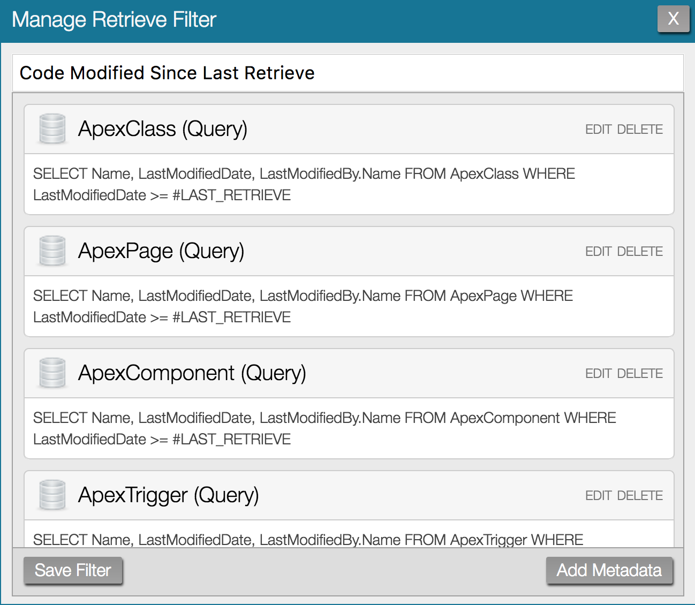
Once you have defined the query, you need fill out the Member field. This field tells ASIDE what sObject field(s) to use as the value in the <members> element when building out the package XML. Most of the time the appropriate value is either the Name or DeveloperName field, but some objects require more complex Member field values to successfully retrieve. For example, examine the default filter named "Objects and Layouts". Under the CustomObject (Query) entry, the Member field is defined as DeveloperName + "__c". This is because the value in the DeveloperName field in salesforce is not quite the correct value required for retrieves. They need an "__c" concatenated to the end of the DeveloperName value, so the Member field supports this type of basic concatenation between strings surrounded in double quotes as well as concatenation of sObject fields. In addition to concatenation, there is also one function available, TRANSLATE, which can be used to turn an object id into its API name. The Layout (Query) uses the TRANSLATE function to turn the TableOrEnumId field into an API name: TRANSLATE(TableEnumOrId) + "-" + Name
Once you have defined your retrieve filter, click Save Filter to add the filter to the list retrieve filters. After saving the filter it is not automatically applied, you will need to select it from the list. If at any time you want to change the definition of a filter, you can edit it by selecting the filter, and clicking the Edit Filter button.
Working with Version Control
ASIDE does not have direct integration with any source control, however, retrieve filters make it simple to retrieve what you’ve been working on for a push to source control. Try out the Code Modified By Me Since Last Retrieve filter; it takes the guesswork out of figuring out what to commit to source control since it will only retrieve files modified by you since the last time you performed a retrieve operation (which is probably the last time you committed code).
Performing Deploys
Though there are multiple ways to retrieve with ASIDE, there is only one way to deploy. Once you have obtained a retrieve result, drag it from your computer and drop it anywhere on the push screen. ASIDE will detect that you dropped a zip file containing a package.xml and begin a deploy for it. The deploy status popup, pictured below, automatically appears while the deploy is in progress.
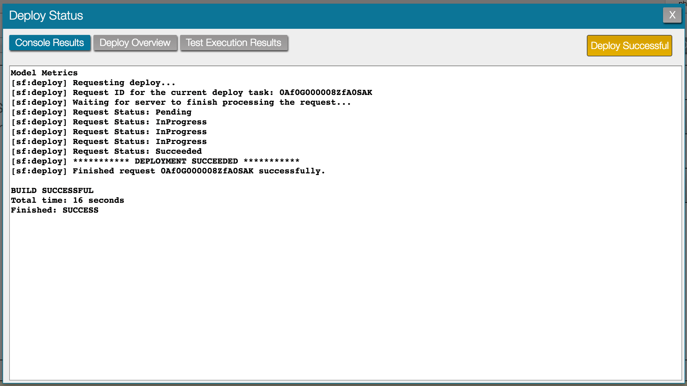
The deploy status popup has three sections: console results, deploy overview, and test execution results. console results displays the status of the deploy in the same manner you would see as if you had ran the same deploy from the command line using the ANT Migration Toolkit. The deploy overview section is a list of all the metadata being deployed along with the status for each item. When you execute a deploy that causes unit tests to run, the test execution results section gives detailed success and failure information about the unit tests, along with code coverage information.
A few things to take into consideration when deploying:
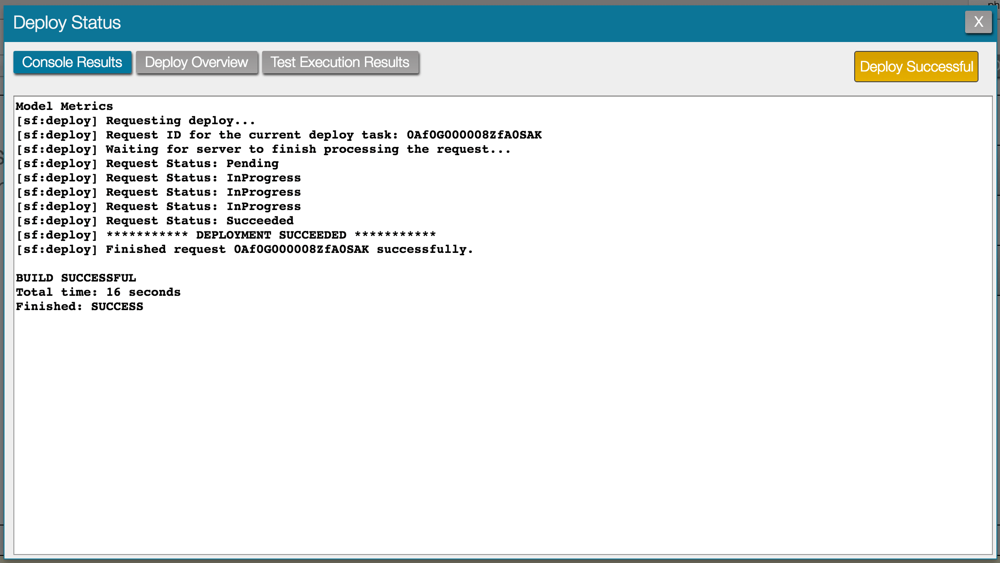
The deploy status popup has three sections: console results, deploy overview, and test execution results. console results displays the status of the deploy in the same manner you would see as if you had ran the same deploy from the command line using the ANT Migration Toolkit. The deploy overview section is a list of all the metadata being deployed along with the status for each item. When you execute a deploy that causes unit tests to run, the test execution results section gives detailed success and failure information about the unit tests, along with code coverage information.
A few things to take into consideration when deploying:
- The max file size zip that can be deployed with ASIDE is 5MB. For larger or more complex deploys, the ANT Migration Toolkit is recommended.
- Only one deploy operation can be ran at a time.
- Deploys are executed against the Salesforce org ASIDE is logged into. You will not be asked to provide credentials for a different org upon deploy. Before you deploy, make sure you are logged into the org you want to deploy against! Tip: Use multiple browsers or Chrome’s personas feature to maintain active ASIDE sessions against multiple organizations at once.
Configuring Deploy Settings
There are a handful of settings that can be configured before you deploy. On the push screen, hover over your username, and choose options. The options popup for the push screen will appear and you will be able to configure the options listed below. By default they are all set to false.
Destructive Changes
To perform a destructive changes deploy, include both a destructiveChanges.xml file along with a package.xml file (it does not need to list any metadata) in the zip, and then drag-and-drop to perform the deploy like you normally would.
Querying Data
The data section is a modifiable view of all the data in your org. It allows you to query any data accessible to the Partner and Tooling APIs, and in many cases, edit the resulting data.
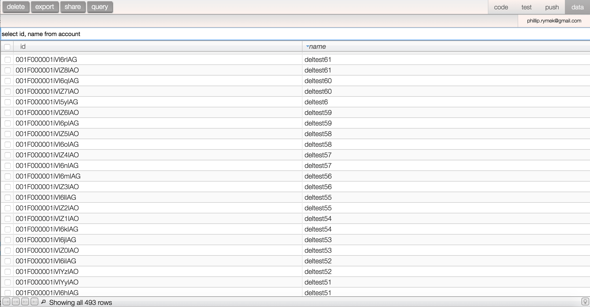
To perform queries, navigate to the data screen and click into the query input (the text box that says “enter a query”). From here you can enter a SOQL query against any sObject visible to the Partner API or the Tooling API. After you have entered a query into the input, click the query button to execute the query, or use the shortcut command + s. Query results appear in the table beneath the query input.
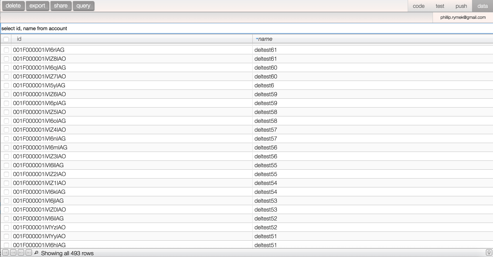
To perform queries, navigate to the data screen and click into the query input (the text box that says “enter a query”). From here you can enter a SOQL query against any sObject visible to the Partner API or the Tooling API. After you have entered a query into the input, click the query button to execute the query, or use the shortcut command + s. Query results appear in the table beneath the query input.
Query Limitations
There are a few limitations ASIDE places on queries executed:
- SOSL is not supported
- Child sub queries are not supported
- The number of records returned by your query is automatically limited to 2,000
Query History
ASIDE stores a history of your past queries. The query input is a typeahead of those previous queries. To limit the number of queries ASIDE will store as history, or to clear the query history, navigate to the data screen and open the options popup from the main menu (the menu that appears when you hover over your username).
Working with Query Results
Once you have performed a query, results appear in the table beneath the query input. The table is based on the incredibly awesome Slickgrid. The table itself has a variety of functionality built into it, which is described in detail below.
Query Results Table
The query results table has a variety of functionality built into it that makes working with the results easier.
Working with Query Result Columns
It is possible to manipulate the query result columns in a variety of ways. By dragging columns you can reorder them from their initial position. You can also sort on a column by clicking that column once to sort, and then another time to reverse the sort. There are also more advanced column operations, which are described below.
Normally, ASIDE displays one column in the query table for every field you are selecting in the SOQL query. However, the results table allows you to change which columns are displayed. For example, if I executed the query SELECT Id, Name FROM Account, I could then right click on any of the columns (e.g. “Id”, or “Name”) which causes a column options menu to appear. From the columns options menu it is possible to hide that column by unchecking the checkbox associated with it. There are two other options in the columns menu: Force Fit Columns and Synchronous Resize. Force Fit Columns is on by default and when set to true, tries to size all the columns such that they end up filling the entire browser window. When it is false, the columns do not attempt to fill the entire browser window. If you try to resize a column with Synchronous Resize set to true, you will see the other columns move to accommodate the new width of the column you are resizing, as you resize it. With it set to false, the other columns don’t move until you are done resizing the column.
Normally, ASIDE displays one column in the query table for every field you are selecting in the SOQL query. However, the results table allows you to change which columns are displayed. For example, if I executed the query SELECT Id, Name FROM Account, I could then right click on any of the columns (e.g. “Id”, or “Name”) which causes a column options menu to appear. From the columns options menu it is possible to hide that column by unchecking the checkbox associated with it. There are two other options in the columns menu: Force Fit Columns and Synchronous Resize. Force Fit Columns is on by default and when set to true, tries to size all the columns such that they end up filling the entire browser window. When it is false, the columns do not attempt to fill the entire browser window. If you try to resize a column with Synchronous Resize set to true, you will see the other columns move to accommodate the new width of the column you are resizing, as you resize it. With it set to false, the other columns don’t move until you are done resizing the column.
Paginating Query Results
The query results table also supports pagination. Click on the light bulb icon in the lower right hand corner of the table, and the pagination options will appear to the left of the light bulb icon. You are able to set the page size from here, or selecting All will turn off the pagination. With pagination turned on, the buttons to page are on the left side of the query results table footer.
Filtering Query Results
Another useful feature of the query results table is the ability to filter on query results. To filter your query results, click the magnifying glass in the query results table footer. This will display an additional row at the top of the table that contains one input for each column. Entering a value into the column will filter the table rows, matching against that column’s values.
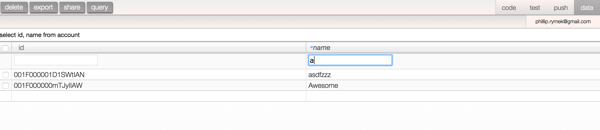
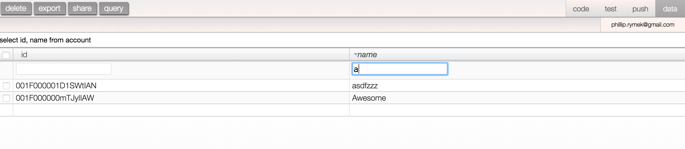
Query Result Rows
There are also a number of operations you can perform directly on the query result rows themselves. Right clicking any cell on the table will reveal a menu with two options. You can either open the detail page for that row’s record, or it is also possible to execute a Salesforce global search for the value in the cell you are right clicking on.
Modifying Query Result Data
It is also possible to perform insert, update, and delete operations against the query result rows.
- To update the value in any cell, double click on it, enter a new value, and press the enter key, or click out of the cell; you should receive a success or error message in ASIDE’s header.
- To insert an entirely new row, scroll to the bottom of the table where there will be a blank row. Enter a value in one of the cells, if that is enough data to create the object, the insert will be successful and the row will be given an id.
- To delete data, use the checkbox column to select the rows you wish to delete. After you’ve selected the rows, click the delete button in the upper left hand corner of the screen. This will prompt you to confirm the delete, and then will perform the delete. Please note the delete operation is carried out in batches of 50.
Exporting Query Results
ASIDE can export query results to CSV. After you have performed a query, click the export button, and ASIDE will generate and kick off a download of a CSV file containing the results of the query.
Sharing Query Results
In addition to exporting query results, you can share your query results with other people who have access to your Salesforce organization by clicking the share button. This opens a popup that has a link in it. Simply copy the link and share it with your teammates. Please note that ASIDE is not storing any data for this functionality, the link contains the query used to replicate the results.
The End!
That's all folks! If you have any questions that were not covered within this help document, please email me at admin@aside.io.